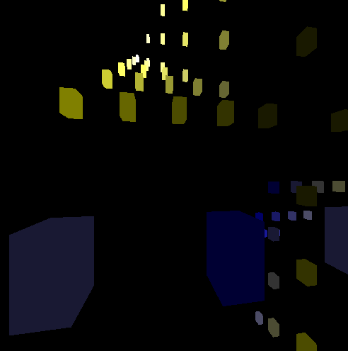

In this project, I was given a spec to implement a point cloud viewer in OpenGL. I used the python binding of the OpenGL library to render these points and added controls for camera control. The point cloud script can parse coordinate and color values from a text file and display them in an interactive GUI. I also implemented two types of rendering; the basic CPU render which performs poorly on very large inputs and the GPU render which can comfortably render large datasets.
I implemented a .txt format for reading the data for the point cloud. Coordinates are given for each point in 3 dimensions as well as RGB values as a float from 0 to 1. The file format is comma separated with a header row. I also created a simple generator script to create files in this format for testing. I used a math function that generated relatively nice points. The three generated text files correspond to three different approximate number of points; 100, 500, and 50000. The latter was useful in showing the differences in rendering methods.
The camera control listens for key down events and applies a corresponding translation or rotation matrix to the render. Controls are present for all 6 degrees of freedom. I opted to change the starting perspective from top down to front facing as it looked better for the datasets I generated but this is a trivial change.
Initially, I worked on storing the coordinates and colors in a 2D array and drawing the cube's 6 faces on each display call. The problem with this pipeline is that it requires the loading of the data structure into memory for the rendering device to use every call. The overhead in this process was negligible for a smaller set of points but was untenable for a large set (50000). So, I looked into implemented a vertex buffer. The buffer would be sent to the rendering device once to use for each display call. This process eliminates the overhead in transferring data from working memory to the rendering device. The speed-up was very noticeable in the large set; previously, the render would freeze for any translation (and crashed my computer once) while it was possible with the buffer to translate or rotate freely with little load on the machine.
Here are some images from every generated data set. The translation and rotation functions are best experienced locally. The usage section in the readme has details about the same.
|
|

|
|
|
|
The OpenGL documentation is a bit messy and obscure but there is so much power in the library. There are many directions to go from here. In terms of optimization, I focussed a lot on rendering large data sets even if it was unnecessary but there are even more ways to speed up rendering.
As point clouds are used mainly for visualization of data, creating a plugin for the matplotlib stack would be a good extension. This would naturally lead to extensions such as drawing lines for curves, finding trends in data sets, and so on.